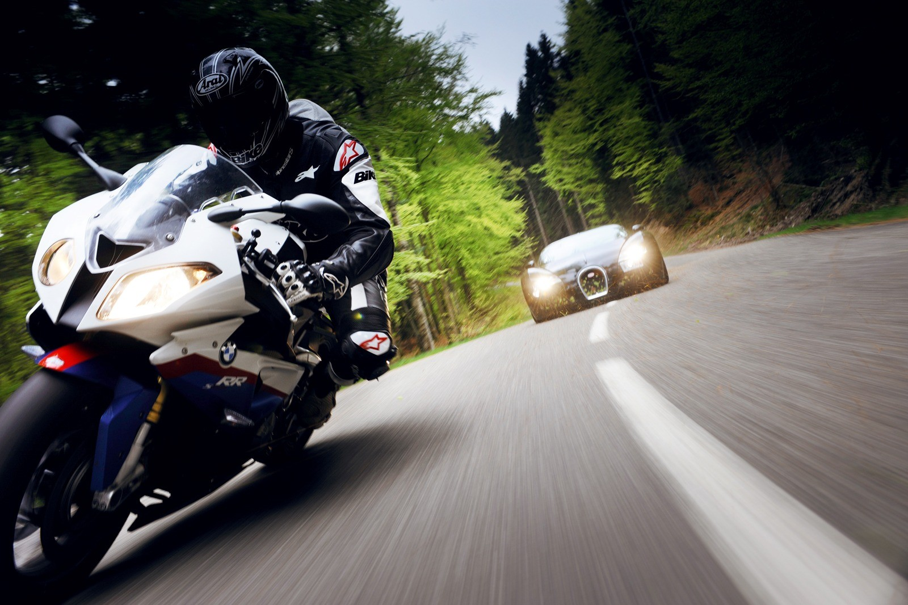

"Tu calidad de vida dependera de la calidad de tus pensamientos"
Soy Steven Perez, apasionado por las motos y autos, esta afición la he tenido desde muy niño y esto me llevo a estudiar ingenieria automotriz, porque queria entender mejor el funcionamiento de un motor a combustión y la gran variedad de modelos que existen.
Actualmente me llamo la atención el tema de programación, ya que por pura curiosidad pude observar como es realmente su funcionamiento y quede fascinado, por lo cual decidi estudiar desarollo de sofware, esta nueva etapa de aprendizaje me tiene muy emocionado ya que al ser poco lo que he aprendido se que al finalizar podre ayudar a muchas personas con mi trabajo.
Porque estudie ingenieria automotriz

Realmete desde muy pequeño tuve la oportunidad de
aprender a manejar una moto y desde ahí comenzó la afición por los motores a combustión, mi padre
incremento esa pasión porque cuándo él le hacia modificaciones o cualquier arreglo
a la moto me explicaba porque era la falla
y como podría repararla, él no era mecánico solo sabia algunas cosas de reparación o
ajuste de motos muy basicas, pero cada vez que decidia hacerle
algo nuevo a la moto a mi me interesaba
queria ver como iba a quedar.
Acontinuación voy a mostrar algunos autos que son asombrosos y personalmente me gustan.
koenigsegg Agera
Es un auto super deportivo biplaza de procedencia sueca y que solo diseña autos exclusivos.
- Tiene un valor aproximado de 2.2 millones de dolares
- Motor V8 5.0L semiautomatico con 7 velocidades
- Aceleracion (0-100km/h) en 3.0 segunto
- Velocidad maxima 425 km/h
Entre otras detalles se encuentra el doble turbocompresor que le añade un estilo muy rudo y mas potencia al auto, tambien podemos admirar un aleron que se despliega para mejorar la aerodinamica y poder alcanzar altas velocidades.
Tiene algunos componetes en fibra de carbono, como es el colector de admision, en cuanto a los frenos posee componentes en ceramica para discipar mejor la calor y lograr el mejor rendimiento.

lykan HyperSport
Es un exclusivo automvil superdeportivo coupe desarrollado por la empresa W Motors ubicada en la republica libanesa (Emiratos Arabes ) se encuentra entre los autos mas caros y exclusivos del mundo.
- Motor V6 3.7L con intercooler independiente
- Aceleracion (0-100km/h) en 2.8 segunto
- Velocidad maxima 395 km/h
- Tiene un valor aproximado de 3.4 millones de dolares
Este auto solo esta disponible a la venta en el Medio y el lejano Oriente, Africa y Europa del este.
Algunos de los detalles que resaltan es este auto son sus asientos que poseen costuras en hilo de oro , pantalla holografica interactiva de 9 pulgadas, toda su carroceria esta hecha de fibra de carbono lo cual lo hace muy liviano y aerodinamico, por lo tanto es un auto muy sofisticado.
Bugati Veyron EB
Es un automovil superdeportivo diseñado por el grupo volkswagen y producido en Molsheim, obtuvo el record del auto mas rapido del mundo el el año 2007.
- Motor W16, basado en dos bloques de 8 cilindros
- Aceleracion (0-100km/h) en 2.46 segunto
- Velocidad maxima 407 km/h
- Tiene un valor aproximado de 1.6 millones de euros
Tiene un sistema de doble embrague con 7 marchas, tambien tiene un diseño de neumaticos especial de Michellin PAX Run flat, diseñados para rodar a maxima velocidad y este detalle le costo 25000 dolares por juego y los neumaticos solo pueden ser desmontados en francia, y el servicio cuesta $70000.